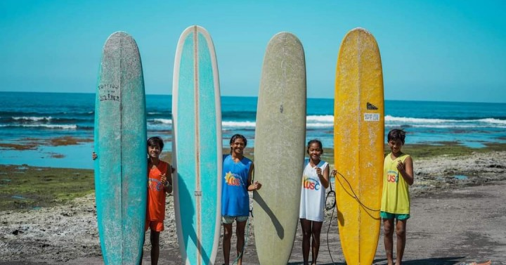

San Juan, La Union is the surf capital of northern Luzon — a laid-back beach town where beginners learn to stand up and seasoned surfers chase the perfect break. Sun, sand, and swell, just 5 hours from Manila.

Nestled along the coast of La Union province in the Ilocos Region, San Juan has grown from a quiet fishing village into the most popular surf destination in northern Luzon. The town's main beach — stretching along the South China Sea — produces consistent waves from October to March, making it ideal for both beginners and intermediate surfers.
What makes San Juan special isn't just the waves. It's the vibe — a relaxed, creative beach town culture that has attracted surfers, artists, digital nomads, and weekend travelers from Manila and beyond. The strip along the beach is lined with surf schools, board rental shops, beachfront cafes, and laid-back bars that come alive at sunset.
Whether you're here to learn to surf for the first time, improve your technique, or simply unwind on the beach with a cold drink and a stunning sunset — San Juan delivers every time.
San Juan is located in La Union province, about 270 km north of Manila. It's one of the most accessible beach destinations from the capital.
Take a bus from Cubao or Pasay to San Fernando, La Union. Partas, Dominion, and Philippine Rabbit operate this route. Travel time is about 5₱6 hours depending on traffic.
Travel time: ~5₱6 hours | ~₱400–₱600From San Fernando, take a jeepney or tricycle to San Juan town. The ride takes about 20₱30 minutes. Tell the driver you're going to the surf area or Urbiztondo Beach.
Jeepney: ~₱30 | Tricycle: ~₱100–₱150Some bus lines offer direct trips to San Juan, La Union — especially on weekends. Check with Partas and Dominion for direct routes. This saves the jeepney transfer from San Fernando.
Direct bus: ~5 hours | ~₱450–₱650Driving from Manila via NLEXSCTEXTPLEX takes about 4₱5 hours. Renting a van with friends is a popular option — split the cost and enjoy door-to-door convenience with your surfboards.
Drive: ~4₱5 hours | Van rental: ~₱3,500₱5,000Click any pin to explore San Juan's surf breaks, beaches, and nearby attractions in La Union.
Two days is the perfect amount of time to surf, explore, eat well, and soak in the La Union beach culture.
Hit the water early before the crowds arrive. Morning sessions have the cleanest waves and the best light. Book a lesson at one of the surf schools along Urbiztondo Beach if you're a beginner.
Dry off and head to one of the many beachfront cafes for a hearty breakfast. Try the local longsilog or go for acai bowls and smoothies at one of the health-focused spots along the strip.
Head back for an afternoon session or simply relax on the beach. Watch the more experienced surfers tackle the bigger sets. Rent a board and practice on your own if you've already had a lesson.
San Juan sunsets over the South China Sea are legendary. Grab a cold drink from a beachside bar, find a spot on the sand, and watch the sky turn orange and pink. This is what La Union is all about.
The strip comes alive at night. Enjoy fresh seafood at a local restaurant, then explore the bars and live music venues along the beach road. The vibe is relaxed, friendly, and unpretentious.
Wake up for the sunrise session — the most magical time to surf. The water is glassy, the light is golden, and the beach is almost empty. Even if you don't surf, watching the sunrise from the beach is worth the early wake-up.
Take a tricycle to the nearby Ma-Cho Temple — a stunning Chinese Taoist temple perched on a hill overlooking the sea. The colorful architecture and panoramic views are a striking contrast to the beach vibe.
Visit the historic Poro Point Lighthouse — a 19th-century Spanish-era lighthouse with sweeping views of the South China Sea. A quick but rewarding stop before heading back to Manila.
Have a final lunch at your favorite spot on the strip, then catch your bus or van back to Manila. You'll leave with sore arms, a sun-kissed face, and a strong urge to come back next weekend.
"I had never surfed before in my life. My instructor was incredibly patient — by the end of the 2-hour lesson I was standing up and riding waves. I was absolutely hooked. We ended up extending our trip by two days because we couldn't bring ourselves to leave. San Juan has this magical energy that just makes you want to stay. The sunsets alone are worth the 5-hour bus ride from Manila."
"I've surfed in Bali, Siargao, and Baler — and San Juan holds its own. The waves are consistent, the surf community is welcoming, and the food scene has exploded in recent years. The beachfront cafes and bars have a really cool, creative vibe. It's become a proper surf town without losing its laid-back soul. Perfect for a long weekend escape from Manila."